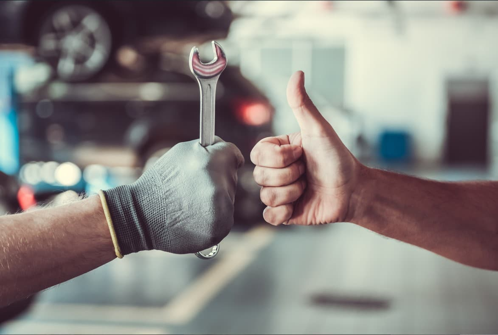

 En WA Sport, nos comprometemos con la transparencia y el servicio al cliente. Nuestro objetivo es que cada cliente reciba un trato personalizado, siempre informado sobre el estado de su vehículo y las opciones disponibles para su reparación o mantenimiento. Tu satisfacción es nuestra prioridad, y nos aseguramos de que cada visita a nuestro taller sea una experiencia confiable y libre de preocupaciones.
Experiencia y Profesionalismo Con años de experiencia en el sector, nuestro equipo de mecánicos altamente capacitados tiene el conocimiento y las habilidades para manejar una amplia gama de servicios automotrices. Ya sea una reparación compleja o un mantenimiento rutinario, puedes confiar en nosotros.